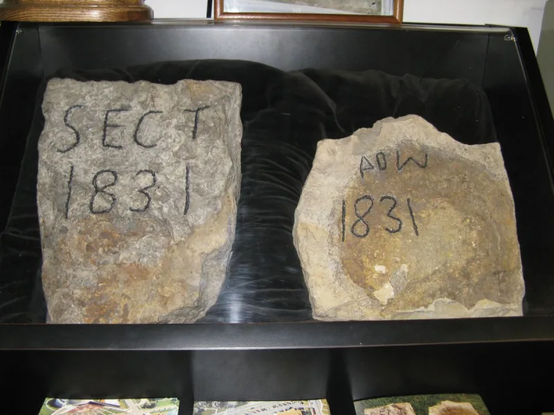
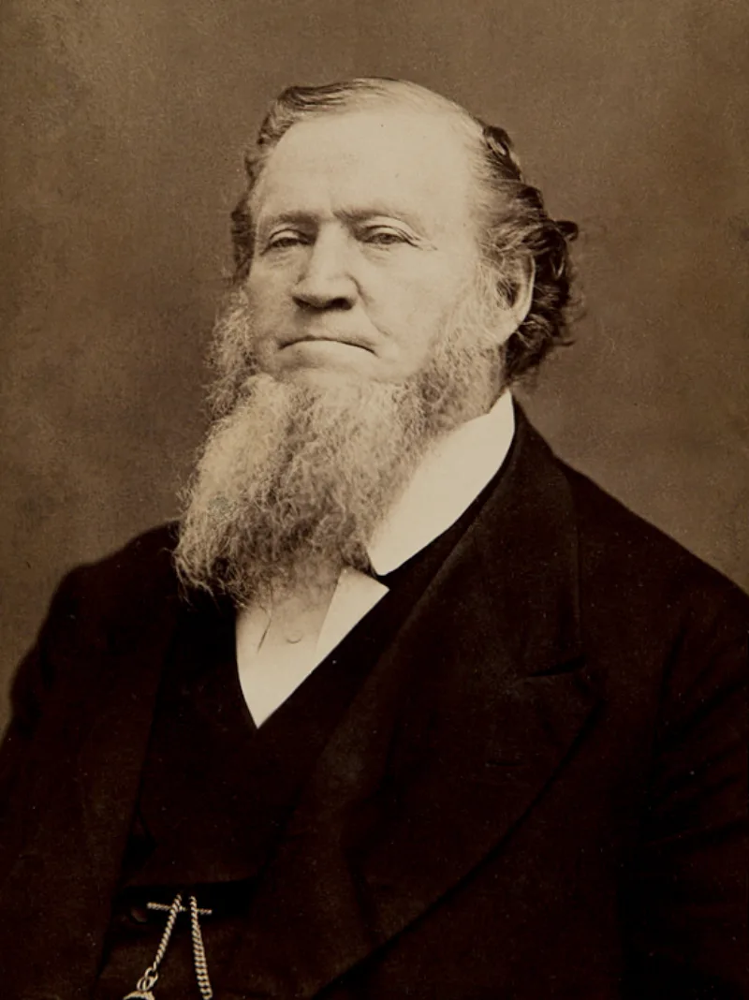

Zion's Camp: 900 miles, no land recovered
UnrefutedNo good counter-argument has been published by LDS scholars.
The promise
D&C 103, from February 1834. Zion — Jackson County — would be redeemed "by power," with the Lord going before the armed expedition.
"I will fight your battles." Verses 15-20 say his angels would go up before them.
What happened
Zion's Camp marched roughly 900 miles. Cholera killed about a dozen members.
Missouri's governor declined to help. No land was recovered.
The walk-back
D&C 105, in June 1834, called it off. The Saints must "wait for a little season for the redemption of Zion." The failure is attributed to their own transgressions.
Both the promise and the retraction sit in the canon today. And 192 years later the little season continues.
Their answer, at full strength
That D&C 103 was conditional all along. D&C 105 itself says the Saints failed to consecrate and were not ready, so the Lord deferred rather than broke his word.
And Zion's Camp is read as a refining trial. Many future apostles and seventies were chosen from among its veterans, so the march succeeded at its real purpose.
How strong is this argument?
Strong for you, and it is unusually clean. The conditions were announced after the failure, not before it.
D&C 103 reads as an unconditional promise with angels going ahead. And the refining-trial reading concedes that the stated objective failed.
Best of all, you need no outside source. Both halves are in their own scriptures.
What to say
"D&C 103 promises Zion. D&C 105 postpones it.
How long is a little season?"



How they answer this — at its strongest
D&C 103 was always conditional, and the march shaped the men who later led.
Apologists read D&C 103 as conditional.
D&C 105 itself explains why. The Saints failed to consecrate, and they were not ready. So the Lord deferred the promise rather than broke it.
Zion's Camp is then reframed as a refining trial. Many future apostles and seventies were chosen from among its veterans. On that reading the march succeeded at its real purpose.
The verdict
Strong for you, and unusually clean: both halves sit in their own scriptures.
The conditions were announced after the failure, not before it. D&C 103 reads as a flat promise with divine backing behind it. 'Mine angels shall go up before you.' D&C 105 fits the conditions on once the march collapsed.
The refining-trial reading concedes that the stated goal failed.
The unique value here is teaching value. Unlike disputed prophecy cases, the believer's own canon holds both the promise and the walk-back. No outside source is needed. And a 'little season' now entering its third century speaks for itself.
Sources
- LDS D&C Student Manual, ch. 41 (D&C 103; 105)
- BYU Religious Studies Center: 'Zion's Camp'
- Doctrine and Covenants Central: Historical Context of D&C 105
- Scripture Central: D&C 103-105